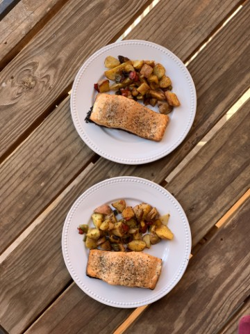

Kenji’s Ultra-Crisp-Skinned Pan-Roasted Fish Fillets
I learned this technique from Kenji López, and it’s so good I had to
write it down. I’ve only used it for salmon, but in theory, it works for
any skin-on fish fillets..

Ingredients
- Skin-on fish fillets (about 6 ounces each, 1 per serving)
- Salt and freshly ground black pepper
- 2 tablespoons vegetable oil
Procedure
-
Thoroughly dry the fillets with paper towels and season both sides
with salt and pepper.
-
Heat the oil in a large skillet on medium-high until shimmering.
-
Place the fillets skin-side down, reduce the heat to medium-low, and
press the fillets with a spatula for the first minute to ensure skin
contact.
-
Cook for about 5 minutes, or until the skin lifts easily from the
skillet.
-
Flip the fillets and cook for an additional minute, skin-side up.
-
Transfer the fish to a paper towel-lined plate to absorb excess oil
and serve immediately.